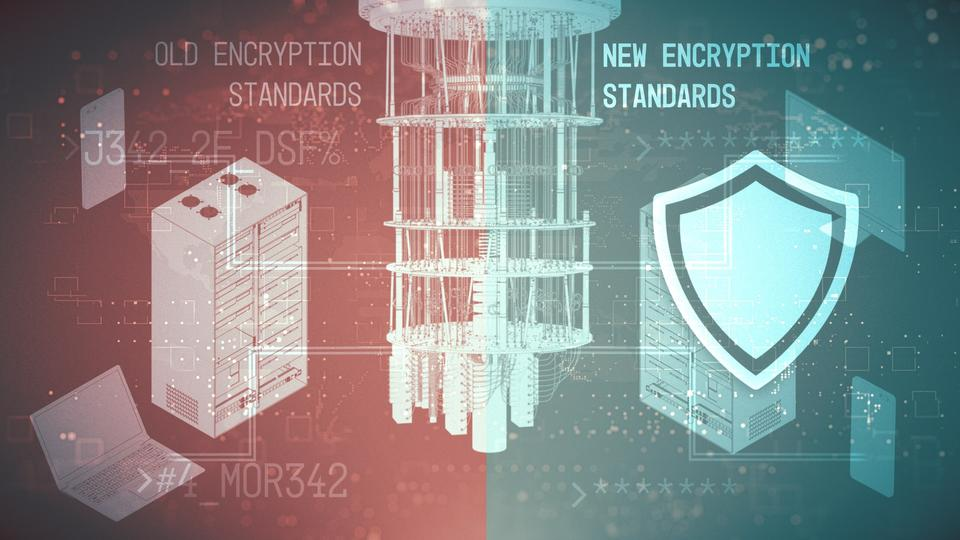

Quantum computers will be able to decript encripted information.
NIST is creating defenses against such attacks through Post-Quantum Cryptography (PQC).
Current methods of encryption use very large prime numbers that everyday computers have a lot of difficulty factoring.
These large prime numbers are then multiplied together to make an even bigger number. The action of multipling the numbers is very fast, but finding what the original two numbers were is very resource/time consuming.
To find these original numbers, a conventional computer could potentiall take billions of years to calculate.
Our computers use a system of binary, where all data
is represented with 0's and 1's.
With quantum computers (more specifically quantum physics),
data is both a 0 and 1 at
the same time.
This allows calculations that would be difficult (or impossible) on a conventional computer. Because of this, quantum computers could easily "crack" current cryptography algorithms.
Quantum computers win this round...To prevent quantum computers from wreaking havoc on our current cryptograpy algorithms, we need a better algorithm.

Better algorithms are being developed by NITS, who have released 3 PQC standards in . They urge computer system administrators to begin transitioning to the new standards as soon as possible.
Who will win? Only future will tell... (Hopefully PQE)